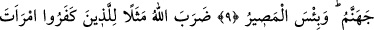
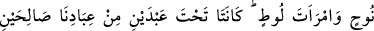
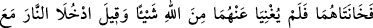
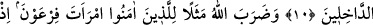
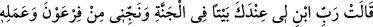
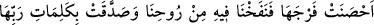
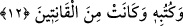

KÂFİRLERE VE MÜNÂFIKLARA
KARŞI CİHAD ET
9. Ey Peygamber! Kâfirlere ve münâfıklara karşı cihâd et, onlara karşı sert
davran. Onların varacağı yer cehennemdir. O gidilecek yer ne de kötüdür!
10. Allah, inkâr edenlere, Nûh’un karısı ile Lût’un karısını misâl verdi. Bu ikisi,
kullarımızdan iki sâlih kişinin nikâhları altında iken onlara hâinlik ettiler. Kocaları
Allah’tan gelen hiçbir şeyi onlardan savamadı. Onlara: Haydi, ateşe girenlerle
beraber siz de girin! denildi.
11. Allah, inananlara da Firavun’un karısını misâl gösterdi. O: Rabbim! Bana
katında, cennette bir ev yap; beni Firavun’dan ve onun (kötü) işinden koru ve beni
zâlimler topluluğundan kurtar! demişti.
12. İffetini korumuş olan, İmrân kızı Meryem’i de (Allah örnek gösterdi). Biz,
ona rûhumuzdan üfledik ve Rabbinin sözlerini ve kitaplarını tasdik etti. O,
gönülden itâat edenlerdendi.
“Ey Peygamber!” Ey haber veren rasûl veya şânı yüce rasûl!
“Kâfirlere” kılıçla, yâni kâfirlere karşı kılıçla cihâd et! “ve münâfıklara karşı”
gerekli delilleri ileri sürerek ya da onları cehennem azâbıyla tehdîd ederek veya onları
kahır yüzüyle tersleyerek ya da sırlarını ortaya çıkararak “cihâd et”.
Kàşânî bu âyet-i kerîmeyi şöyle tefsir eder: Ey Peygamber! Kâfirlere ve münâfıklara
karşı seninle onlar arasında gerçekten bir zıtlık olması sebebiyle cihâd et.
Denilmiştir ki: Nifak kalpte gizli olan bir şeydir. Peygamber Efendimiz’in (s.a.)
kalplerde olan nifâk ve ihlâsı bilmesinin herhangi bir yolu yoktur. Bunları ancak Yüce